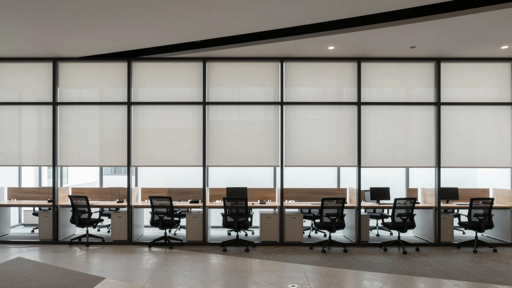
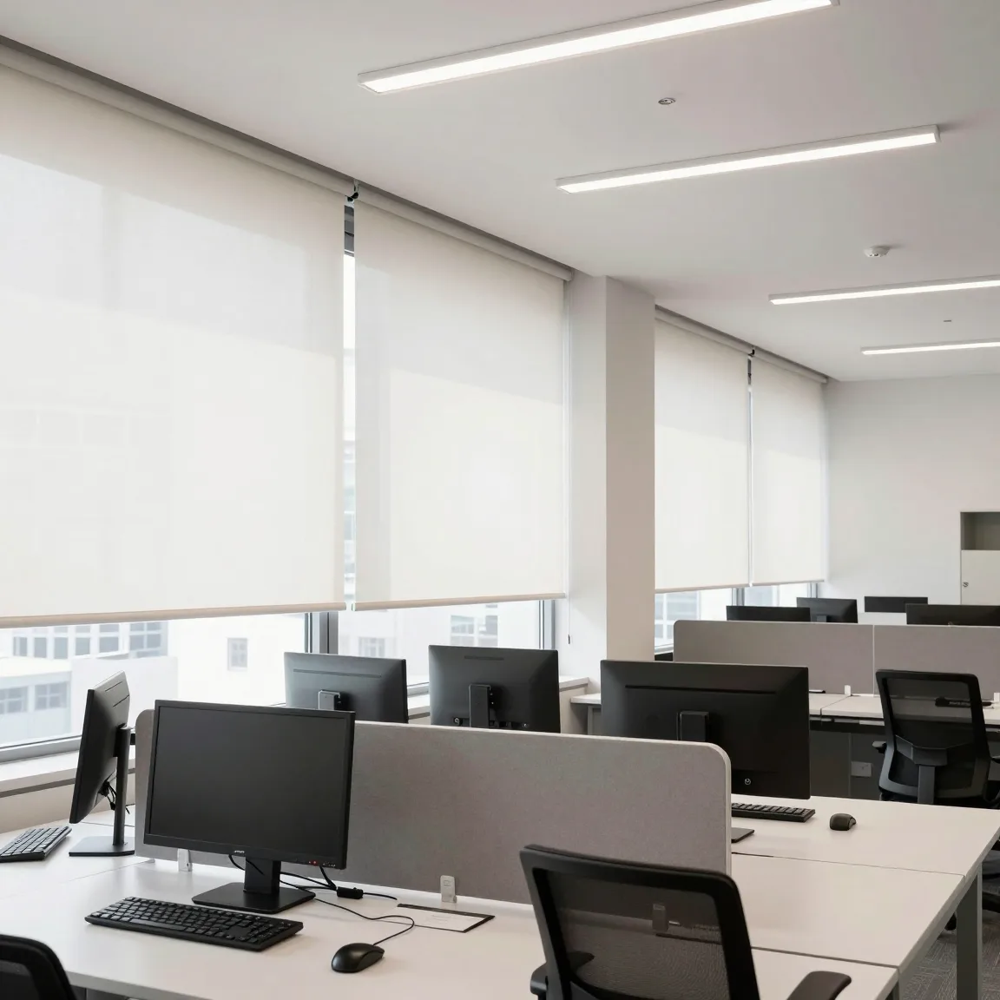
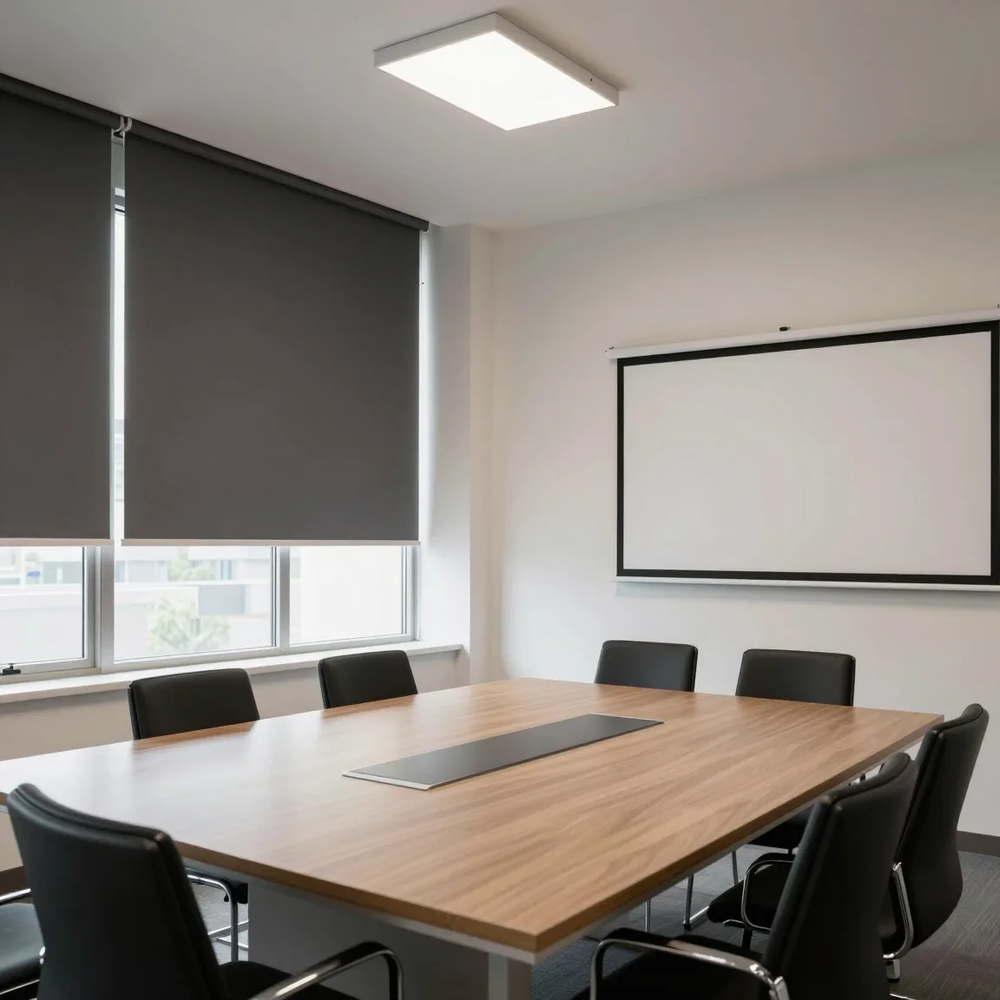
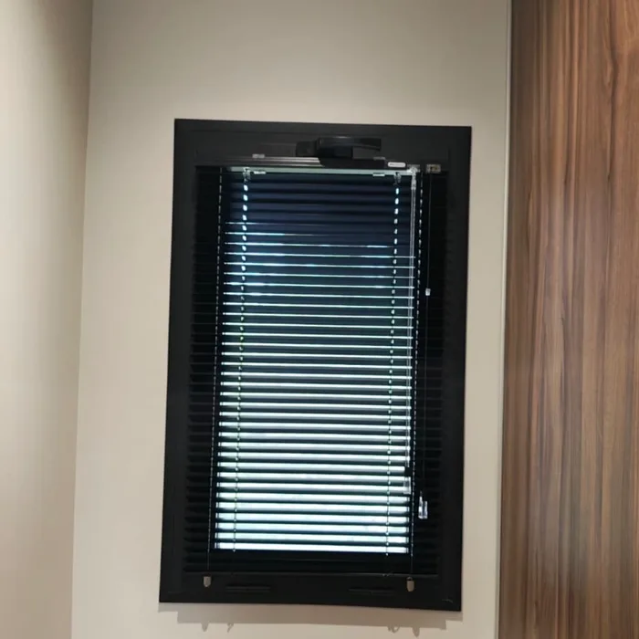
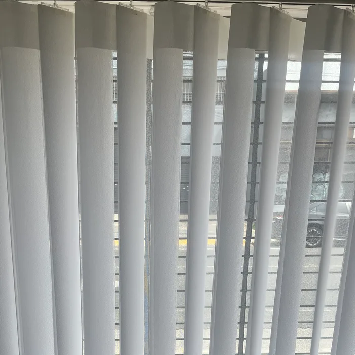
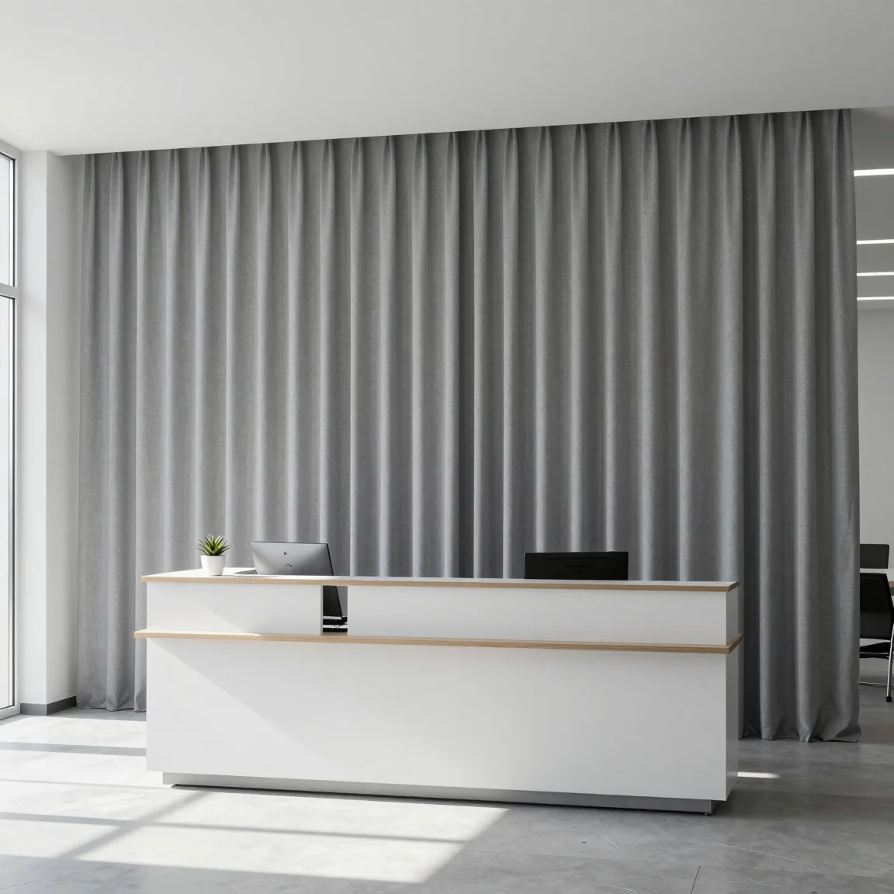
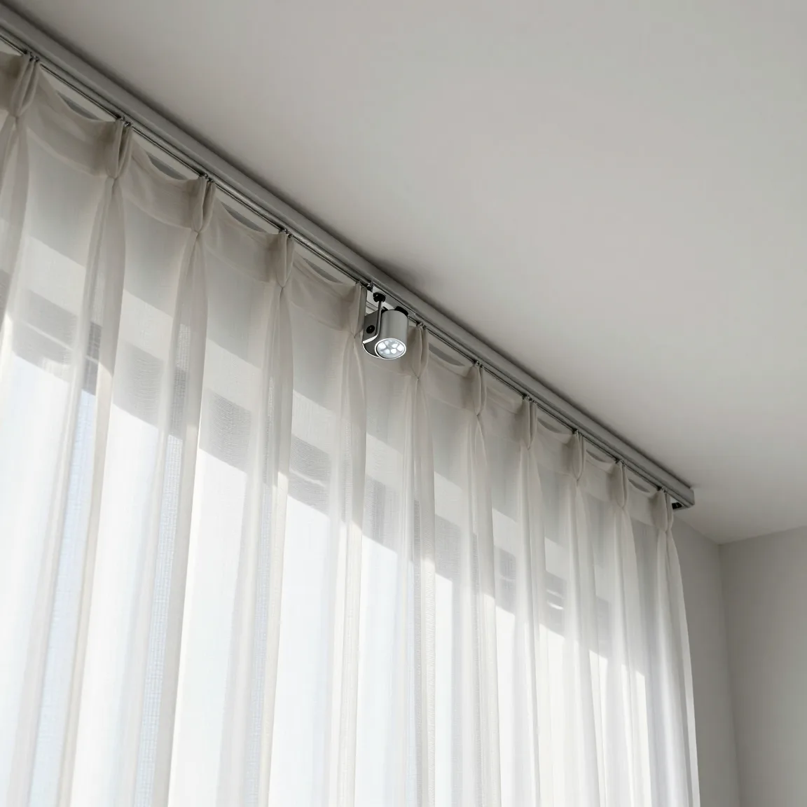

VELA

-
40+
años en el rubro
-
Sin cargo
relevamiento y presupuesto
-
1
responsable por obra
- Roller screen
- Roller blackout
- Venecianas
- Bandas verticales
- Cortinas de tela
- Motorización
Sectores
La misma ventana, con tres telas
Elegí una tela y mirá qué cambia en el puesto de trabajo.
- Reduce el reflejo
- Deja ver afuera
- Oscurece
Escala orientativa de 0 a 5. La apertura exacta de cada screen figura en su ficha técnica.
Soluciones
Trabajamos con varios proveedores y elegimos el sistema que conviene a cada obra.
-

Roller screen
Control solar para puestos de trabajo. -

Roller blackout
Para salas de reunión y auditorios. -

Venecianas
Aluminio de 15 o 25 mm en varios colores, cromáticas tensionadas o woodblind. -

Bandas verticales
Para paños vidriados grandes. -

Cortinas de tela
Para recepciones y espacios de atención. -

Motorización
Con control o tecla; compatibilidad con domótica a confirmar por sistema.
Cómo trabajamos
-
01
Relevamiento
Visitamos el espacio, medimos, vemos cómo se usa cada ambiente y te asesoramos.
-
02
Propuesta y presupuesto
Por escrito, con los plazos del proveedor; las fichas técnicas, si las necesitás.
-
03
Instalación coordinada
Con el responsable de obra, por etapas si hace falta.
-
04
Posventa
Te seguimos acompañando después de la entrega, con el mismo contacto.
Lo que necesita una empresa
-
Presupuesto formal
Por escrito, por ambiente o por piso. Podemos hacer factura.
-
Instalación coordinada
Con el responsable del espacio, por etapas si hace falta.
-
Una solución repetible
La misma tela y el mismo sistema en todas las ventanas.
-
Fichas técnicas
Te enviamos las fichas técnicas del proveedor de cada tela y sistema, para arquitectos y responsables de obra.
-
Posventa
Te seguimos acompañando después de la entrega, para que todo funcione como esperabas.
Preguntas frecuentes
- ¿Pueden hacer factura?
- Sí, podemos hacer factura. El presupuesto es formal y por escrito.
- ¿Cómo coordinan la instalación?
- Lo coordinamos con el responsable del espacio, por etapas si hace falta.
- ¿Tienen fichas técnicas de las telas?
- Sí: te enviamos las fichas técnicas del proveedor de cada tela y sistema que proponemos.
- ¿Cuánto tarda?
- Depende del proveedor y del volumen. Los plazos van en el presupuesto.
Contanos de tu obra.
Relevamiento y presupuesto sin cargo, en CABA y provincia de Buenos Aires.